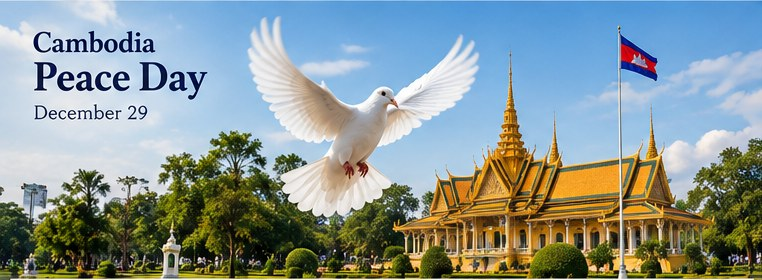

History & Culture
Cambodia Peace Day: December 29 and Its Meaning
Remembering peace, reconciliation, and the work of rebuilding

Cambodia observes Peace Day on December 29, a date associated with the country’s movement toward peace and national reconciliation. It offers an opportunity to reflect on the human cost of conflict, the importance of social healing, and the ongoing responsibility to protect peace. The date and official commemorations should be checked against the government’s current holiday calendar and announcements.
1. Why December 29 is remembered
December 29 is associated with the conclusion of the Khmer Rouge political and military structure through the 1998 win-win policy and subsequent national reconciliation process. Peace Day encourages reflection on how lasting peace depends on security, dialogue, inclusion, and institutions that protect people’s rights.
2. Peace is more than the absence of conflict
For communities and families, peace can mean safety, education, stable livelihoods, respect for different experiences, and the chance to rebuild relationships. Remembering history honestly helps people recognize the impact of conflict while supporting a more peaceful future.
3. Ways to mark the day
People can learn from historical sources, listen respectfully to elders and survivors, take part in educational or community activities, and discuss how to resolve disagreements without violence. Public programs may differ each year and by location.
4. Peace Day and Independence Day are different
Independence Day on November 9 commemorates independence from French protectorate rule in 1953. Peace Day on December 29 focuses on peace and reconciliation. They are separate dates with different historical meanings.
Planning note: Public holiday calendars and event arrangements can change. Confirm the current year’s dates and official notices before planning travel or relying on a closure.
The historical meaning of December 29
The Cambodian government designated December 29 as Peace Day in Cambodia to remember the end of the war and the achievement of national reconciliation associated with the Win-Win Policy in 1998. The Ministry of Information has described the day as a national observance intended to remember the destruction caused by conflict and the importance of preserving peace. The date is therefore connected to a specific historical milestone as well as to a broader reflection on the consequences of war.
Cambodia’s modern history includes periods of severe violence, displacement, political division, and profound loss. Any short article necessarily covers only a small part of that history. Readers who want to understand the period in depth should consult multiple sources, including historical research, records from the Extraordinary Chambers in the Courts of Cambodia, testimony from survivors, and carefully documented accounts from different perspectives.
What national reconciliation means
Reconciliation is a long process, not a single event. It can involve bringing communities back into contact, rebuilding institutions, restoring daily routines, acknowledging suffering, and creating opportunities for people to live without fear. It does not mean that every person has the same memories or interpretation of the past, and it should not require families to forget those who suffered.
Peace can be understood at several levels: safety in daily life, the ability to attend school and work, trust in public institutions, access to basic services, and ways to resolve disagreements without violence. These conditions take ongoing effort. Remembering a national peace observance can provide a starting point for discussing how communities protect those conditions over time.
Remembering history with care and respect
Families may have different experiences of Cambodia’s conflict and its aftermath. When discussing the period, listen without pressuring people to share painful memories, avoid treating one person’s story as representative of everyone, and distinguish documented facts from personal recollections. Teachers and parents can choose age-appropriate materials and explain difficult events honestly without exposing children to unnecessary graphic detail.
Historical memory is strongest when it is supported by evidence. Official announcements can explain why a public observance was created; historians and archival records can provide wider context; survivor testimony can help readers understand the human impact. These kinds of sources serve different purposes and should be read thoughtfully rather than substituted for one another.
Ways to observe Peace Day
People may mark the day by learning about Cambodian history, attending an educational or community event, listening to elders, visiting a memorial respectfully, or discussing peaceful ways to settle disagreements. Schools and community groups may use the occasion to talk about nonviolence, cooperation, and the importance of protecting civilians during conflict.
There is no single personal ritual that every Cambodian family must follow. The national meaning of the day can be recognized through quiet reflection as well as through organized public events. If you attend an official ceremony, follow the organizers’ instructions and check current details, since locations and programs may vary from year to year.
Peace Day and Independence Day are different
Independence Day, observed on November 9, commemorates Cambodia’s independence from French protectorate rule in 1953. Peace Day, observed on December 29, focuses on the end of the war and national reconciliation associated with 1998. Both are important national dates, but they refer to different events separated by decades.
Understanding the distinction helps prevent a common calendar mistake: a national holiday may commemorate sovereignty, a royal event, religious tradition, or a later political milestone. Each should be explained with its own date, historical context, and sources rather than described simply as another general celebration.
Sources and further reading
- Cambodia Ministry of Information: “Peace Day in Cambodia” — explains the designation of December 29 and the government’s stated purpose for the observance.
- Extraordinary Chambers in the Courts of Cambodia: Historical Context — background for studying Cambodia’s modern history.
This guide is an introduction to the observance and is not a substitute for a comprehensive history of the conflict. Readers should consult multiple well-documented sources when researching the period.
Frequently asked questions
When is Cambodia Peace Day?
December 29 each year.
What does the day commemorate?
It focuses on peace and national reconciliation, including events associated with the 1998 win-win policy.
Is Peace Day the same as Independence Day?
No. Independence Day is November 9; Peace Day is December 29.
Explore more: Cambodian Public Holidays · Coronation Day · Khmer Calendar
← Back to the MyBirthSign Blog